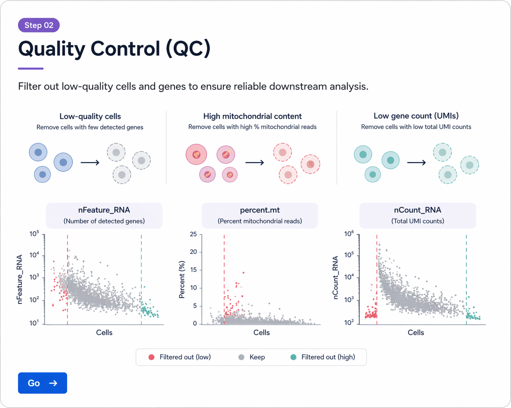

본 단계에서는 single-cell RNA-seq 데이터의 품질을 평가하고, low-quality cell을 제거하는 과정을 수행합니다. QC는 downstream clustering, annotation, DEG 분석의 신뢰도를 결정하는 핵심 단계입니다.
Single-cell RNA-seq 데이터는 개별 세포 수준의 전사체를 측정할 수 있는 강력한 기술이지만, 실제 데이터에는 다양한 기술적 및 생물학적 artifact가 포함될 수 있습니다. 예를 들어 세포 분리 과정에서 손상되거나 죽어가는 세포가 capture될 수 있고, 두 개 이상의 세포가 하나의 droplet에 함께 들어가는 doublet이 발생할 수 있으며, 주변 ambient RNA가 실제 세포의 발현 패턴을 오염시킬 수도 있습니다.
이러한 artifact를 적절히 제거하지 않으면, 이후 단계에서 가짜 cluster가 형성되거나 세포 유형 annotation이 왜곡되고, DEG 결과 역시 신뢰하기 어려워질 수 있습니다. 따라서 QC는 단순한 전처리가 아니라, downstream 분석 전체의 해석 가능성을 높이는 필수 과정입니다.
| 항목 | 설명 |
|---|---|
| Low-quality / damaged cells | 유전자 수가 지나치게 적거나 mitochondrial gene 비율이 높아, 정상 세포 상태를 반영하지 못할 수 있습니다. |
| Doublets / multiplets | 둘 이상의 세포가 하나의 droplet에 함께 들어가 혼합된 발현 패턴을 보입니다. |
| Ambient RNA | 주변에 떠다니는 RNA가 droplet에 섞여 들어가 실제 세포 발현을 오염시킬 수 있습니다. |
| Dissociation stress | 조직 분리 과정 자체가 스트레스 반응 유전자를 유도하여 인위적인 transcriptome 변화를 만들 수 있습니다. |
Seurat 기반 QC에서는 보통 다음 세 가지 지표를 가장 먼저 확인합니다.
일반적으로 nFeature_RNA가 지나치게 낮은 세포는 low-quality cell일 가능성이 있고, 반대로 지나치게 높은 세포는 doublet을 의심할 수 있습니다. percent.mt가 높은 세포는 손상되었거나 stressed 상태일 가능성이 높습니다.
QC filtering 기준에는 절대적인 정답이 없습니다. 실제 연구에서는 tissue type, cell type composition, species, sequencing depth, dissociation protocol, disease context에 따라 서로 다른 기준이 사용됩니다.
예를 들어 종양 조직은 스트레스가 높아 mitochondrial gene 비율이 상대적으로 높게 나타날 수 있고, 면역세포는 다른 세포 유형보다 검출 유전자 수가 적을 수 있습니다. 따라서 threshold는 “문헌값을 그대로 복사”하기보다, 데이터 분포를 먼저 확인한 뒤 합리적으로 조정해야 합니다.
본 실습에서는 mouse colorectal cancer 6개 샘플
(ND1, ND2, ND3, WD1, WD2, WD3)을 사용합니다.
각 샘플은 이미 Seurat object로 불러와 sample_list로 정리한 상태를 가정합니다.
이번 단계에서는 각 샘플에 대해 mitochondrial gene 비율을 계산하고, 분포를 시각화한 뒤, 동일한 기준으로 샘플별 filtering을 수행합니다.
mouse 데이터이므로 mitochondrial gene prefix는 보통 mt- 형식을 사용합니다.
sample_list <- lapply(sample_list, function(obj) {
obj[["percent.mt"]] <- PercentageFeatureSet(obj, pattern = "^mt-")
return(obj)
})
먼저 개별 샘플에서 QC 지표 분포를 확인합니다. 아래 예시는 ND1 샘플의 violin plot입니다.
VlnPlot(
sample_list[[1]],
features = c("nFeature_RNA", "nCount_RNA", "percent.mt"),
ncol = 3,
pt.size = 0.1
)
실제 분석에서는 모든 샘플에 대해 같은 분포를 확인하는 것이 좋습니다.
for (nm in names(sample_list)) {
print(
VlnPlot(
sample_list[[nm]],
features = c("nFeature_RNA", "nCount_RNA", "percent.mt"),
ncol = 3,
pt.size = 0.1
) + ggtitle(nm)
)
}

QC 단계에서는 nFeature_RNA, nCount_RNA, percent.mt 분포를 먼저 확인한 뒤 filtering 기준을 정합니다.
여기서는 실습용 예시로 다음 기준을 사용합니다.
이 값은 하나의 예시이며, 실제 연구에서는 샘플 분포와 조직 특성을 고려해 조정할 수 있습니다.
sample_list_filtered <- lapply(sample_list, function(obj) {
subset(
obj,
subset =
nFeature_RNA > 200 &
nFeature_RNA < 6000 &
percent.mt < 10
)
})
# filtering 전 cell 수
before_cells <- sapply(sample_list, ncol)
# filtering 후 cell 수
after_cells <- sapply(sample_list_filtered, ncol)
qc_summary <- data.frame(
sample = names(before_cells),
before = before_cells,
after = after_cells,
removed = before_cells - after_cells
)
qc_summary
이 표를 통해 각 샘플에서 얼마나 많은 세포가 제거되었는지 확인할 수 있습니다.
for (nm in names(sample_list_filtered)) {
print(
VlnPlot(
sample_list_filtered[[nm]],
features = c("nFeature_RNA", "nCount_RNA", "percent.mt"),
ncol = 3,
pt.size = 0.1
) + ggtitle(paste0(nm, " (filtered)"))
)
}
filtering 후에는 분포가 더 안정적으로 정리되었는지 다시 확인하는 것이 중요합니다.
이후 단계에서는 filtering된 객체를 사용합니다.
sample_list <- sample_list_filtered
rm(sample_list_filtered)
names(sample_list)
nFeature_RNA, nCount_RNA, percent.mt입니다.